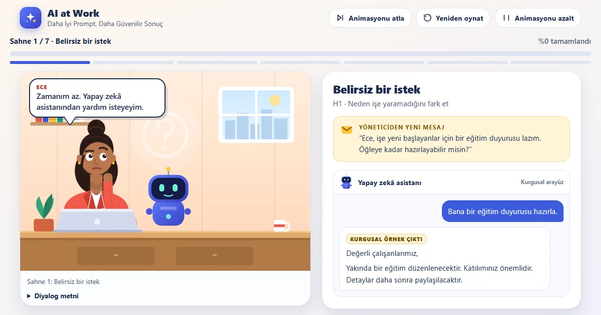
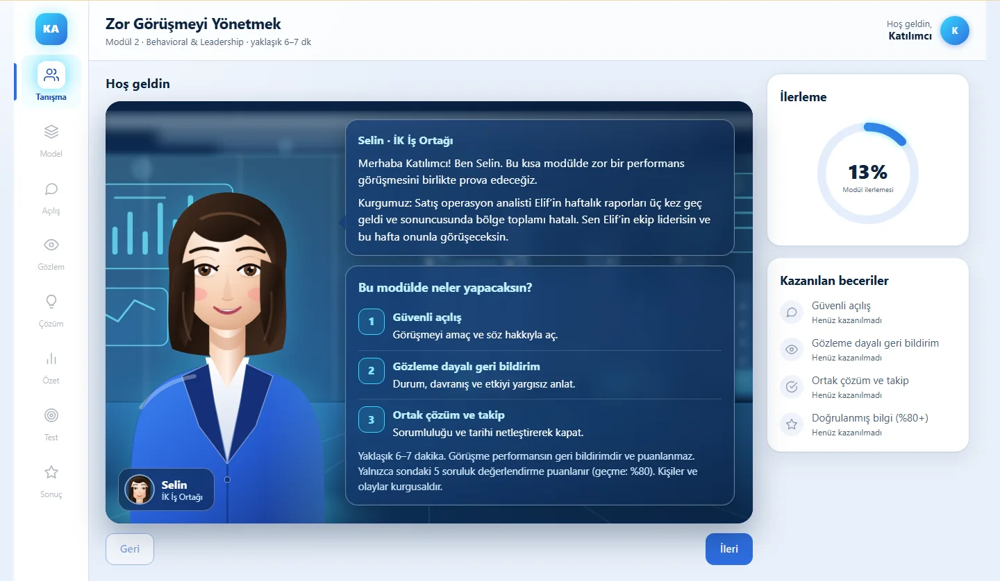
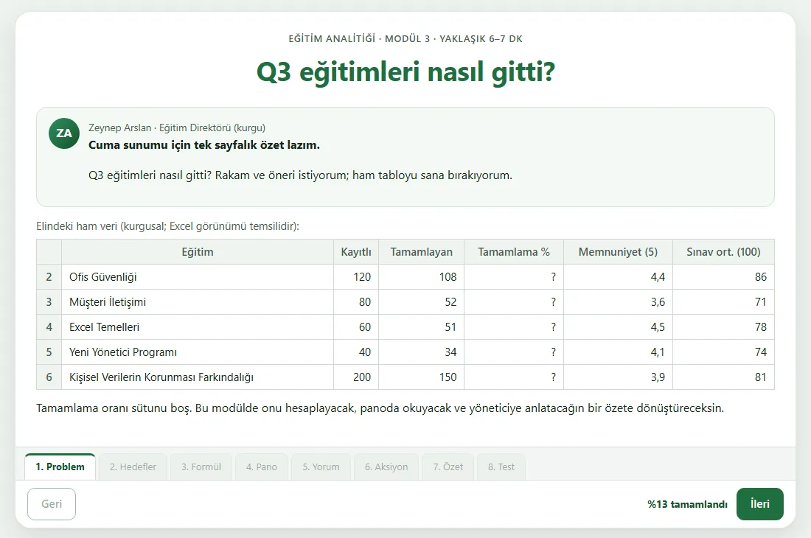
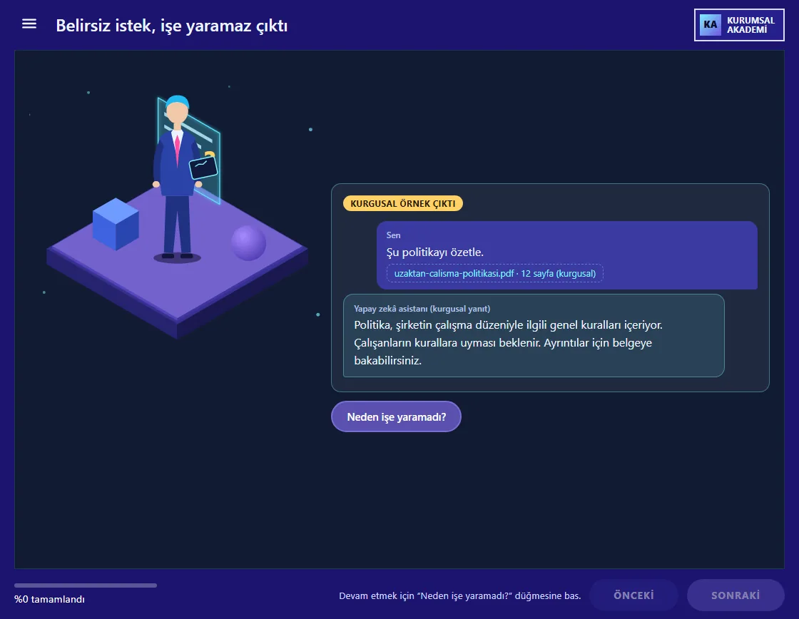

Yasin
Damga
Kurumsal öğrenme portfolyosu: dört iş problemi için dört mikro öğrenme modülü, her biri çevrimdışı çalışan bir SCORM 1.2 paketi.

İş Başında Yapay Zekâ
Modül 1: Daha iyi prompt, daha güvenilir sonuç. Ece ve Mert'le yedi animasyonlu sahnede üretken yapay zekâyı etkili, güvenli ve eleştirel kullanmak.
- Performans problemi
- Çalışanlar yapay zekâya belirsiz istekler yazıyor, verilmemiş tarih ve yer uyduran çıktıyı doğrulamadan paylaşıyor, prompt'a çalışan bilgisi ekliyor.
- Hedefler
- Etkili prompt'un beş bileşenini belirlemek, geliştirilebilir prompt'u iyileştirmek, çıktıyı doğrulamak, gizli ve kişisel veri riskini tanımak.
- Hedef kitle
- Farklı departmanlardaki kurumsal profesyoneller.
- SVG ile çizilmiş karakterler
- Her sahnede bir karar
- Azaltılabilir animasyon

Zor görüşme
Modül 2: Zor görüşmeyi yönetmek. Yeni yöneticiler için avatarlı bir sahnede, cevaba göre dallanan bir performans görüşmesi.
- Performans problemi
- Yeni yöneticiler zor görüşmeden kaçınıyor ya da yargılayıcı konuşuyor; çalışan savunmaya geçiyor ve değişim olmuyor.
- Hedefler
- Durum-Davranış-Etki ile gözleme dayalı geri bildirim vermek, savunmayı yönetmek, görüşmeyi ortak plan ve takip tarihiyle kapatmak.
- Hedef kitle
- Yeni yöneticiler ve ekip liderleri.
- Dallanan senaryo
- Güven ve netlik göstergesi
- Cam arayüz
Excel'de eğitim KPI'ları
Modül 3: Ham tablodan yönetici özetine. Tamamlama oranı, ağırlıklı ortalama ve bir aksiyon önerisi.

- Performans problemi
- Eğitim ekipleri veriyi topluyor ama yönetici özetine dönüştüremiyor; ortalamalar yanlış alınıyor, düşük performanslı eğitim gözden kaçıyor.
- Hedefler
- Tamamlama oranını hesaplamak, basit ve ağırlıklı ortalamayı ayırt etmek, bulguyu aksiyona ve özete çevirmek.
- Hedef kitle
- İK, eğitim ve öğrenme-gelişim ekipleri.
- Excel benzeri sayfa
- Filtreli KPI panosu
- Tutarlı veri seti
Güvenli yapay zekâ
Modül 4: Yapay zekâyı iş yerinde güvenle kullanmak. İzometrik sahneli bir oynatıcıda istem atölyesi, kaynakla doğrulama ve dört gizlilik vakası.
- Performans problemi
- Kurumsal belgeler yapay zekâya bağlamsız veriliyor; çıktı kaynak politikayla karşılaştırılmıyor, gizli veri araca yapıştırılıyor.
- Hedefler
- Atölyede kendi istemini kurmak, iddiaları "uyumlu, çelişiyor, kaynakta yok" diye ayırmak, paylaş, anonimleştir ya da paylaşma kararı vermek.
- Hedef kitle
- Farklı departmanlardaki kurumsal profesyoneller.
- İstem atölyesi
- Kaynakla doğrulama
- Gizlilik vakaları

Beceriler
Her modül bir iş problemiyle başlar, yaparak öğretir ve hedeflere bağlı bir ölçmeyle biter. Bunun arkasındaki beceriler:
Öğretim tasarımı
Performans problemi, Bloom düzeyli hedefler, hedef-değerlendirme eşleştirmesi ve sahne sahne storyboard. Dört modülde, belgeleriyle
Animasyonlu karakter anlatımı
Sıfırdan SVG ile çizilmiş karakterler, yedi ifade ve poz durumu, metin uzunluğuna göre zamanlanan konuşma balonları; hareket yalnızca mesajı taşır. Modül 1
Senaryo ve geri bildirim
Cevaba göre dallanan görüşme, seçeneğe özel gerekçeli geri bildirim, karar verilmeden ilerlemeyen akış. Modül 1, 2 ve 4
Yapay zekâ okuryazarlığı
Prompt bileşenleri, uydurma bilgiyi yakalama, kaynakla doğrulama, kişisel veriyi yer tutucuyla değiştirme. Modül 1 ve 4
Öğrenme analitiği
Tamamlama oranı, ağırlıklı ortalama, filtreli KPI panosu ve kodla çizilen grafikler. Modül 3
SCORM 1.2 geliştirme
API bulma, puan ve durum, kaldığı yerden devam, bozuk devam verisine karşı güvenli işleme, manifest doğrulayan paketleme betiği. Dört paket
Erişilebilirlik
Klavye ile tam kullanım, görünür odak, ekran okuyucuya canlı duyurular, işletim sisteminin hareket azaltma tercihine uyum. Dört modül
Bir bakışta
Dört farklı öğrenme yaklaşımı, tek çıta: yaklaşık 6–7 dakika, 5 soruluk değerlendirme, %80 geçme eşiği, internetsiz çalışma.
| Modül | Yaklaşım | Ana etkileşim | Görsel kimlik |
|---|---|---|---|
| 1. İş Başında Yapay Zekâ | Animasyonlu senaryo, karakterli anlatım | Prompt kurma, A/B çıktı karşılaştırma, uydurma bilgiyi doğrulama, veri karartma | Krem ofis sahnesi, 2D karakterler |
| 2. Zor Görüşmeyi Yönetmek | Vaka ve dallanan senaryo | Karakterle görüşme, Güven/Netlik göstergesi | Avatarlı sahne, cam efekti |
| 3. Eğitim KPI'larını Excel'de Okumak | Veri odaklı problem çözme | Formül, filtreli pano, yönetici özeti | Beyaz ve yeşil, Excel ve pano |
| 4. Yapay Zekâyı Güvenle Kullanmak | Örnek karşılaştırma, atölye | İstem atölyesi, doğrulama, gizlilik vakaları | Koyu, izometrik, oynatıcı |